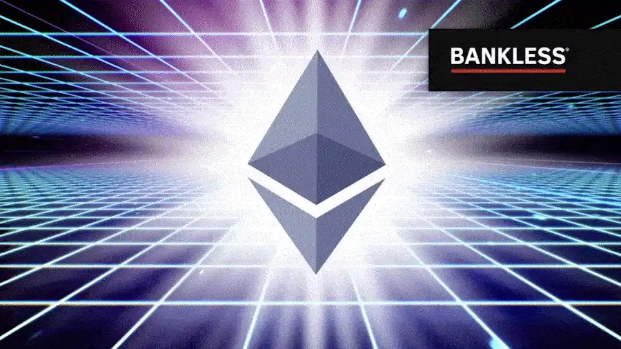
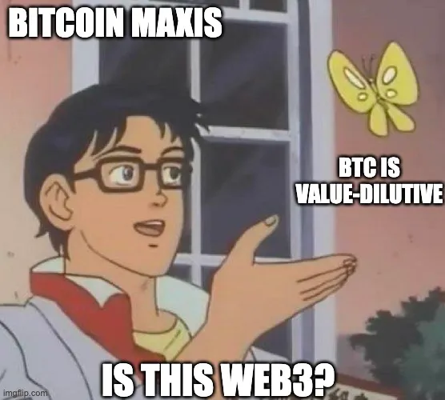
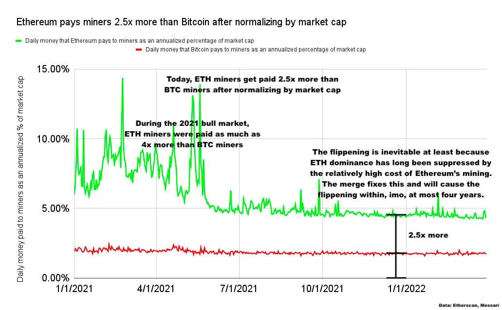
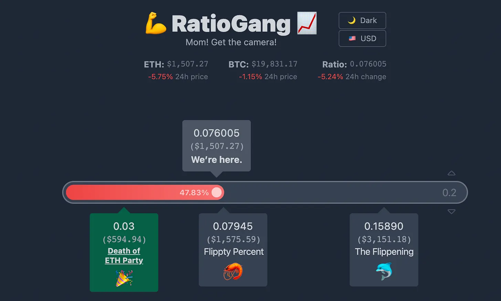

為什麼ETH 有99% 的概率超越BTC？

以太坊已經合併，它的經濟學發生了巨大的變化，ETH 的供應顯著降低。這意味著ETH 的市值最終將超過BTC 的市值嗎？這對整個加密貨幣有好處嗎？為什麼它還沒有發生？
這些問題都是交織在一起的，讓我們通過深入研究BTC 回報的細節來回答。
1、BTC可靠並不等於可投資
BTC 是最可信的中性資產。這是因為比特幣協議是成熟的，不會發生改變的，而且工作證明由於其簡單性和成熟的記錄，也在實質上降低了風險。
多年來，它經受住了一些組織單方面修改比特幣底層代碼和增加其節點規模的幾十次失敗嘗試。不管中本聰的初衷是什麼，BTC 的可靠性已經成為其核心的內在價值主張。
然而，比特幣的可靠性並不意味著該資產將保持其價值，或在購買力或法幣方面累積價值。
相反，比特幣的核心設計是不可編程的，對持有者有任何增值，其挖礦成本結構會導致嚴重的價值洩露。
這就是為什麼對比特幣來說，可靠並不等同於可投資。
說完這個背景，讓我們從歷史回報開始了解BTC 的工作原理。
2016 年發生了什麼？
從2013 年到2016 年，如果你低買高賣，BTC 的回報約為6 倍。
但是，如果你在2013 年的高點買入BTC，並在2016 年賣出，你什麼也沒賺到，零。
2016 年之後，情況就完全不同了。如果你在2016 年買入BTC 並持有到今天，你賺了20 倍到40 倍。在2016 年的低點買入BTC，然後在2021 年的新高賣出怎麼樣？你賺了130 倍。
有人可能會抗議，"2016 年之前是加密貨幣的黑暗時代，那時候無所謂，我們才剛剛開始。"
你確定這解釋了一切嗎？
2016 年前後發生了什麼，導致BTC 在此後的幾年裡表現得更好？在2016 年之前或前後，比特幣有什麼變化，創造了巨大的回報？
其實比特幣本身並沒有改變，畢竟，不改變是比特幣的特性，也是它一流的可靠性的一部分。
當然，閃電網絡是在2016 年之後推出的，但它幾乎沒起到什麼作用。
2016 年前後還可能發生了什麼事情來釋放比特幣的潛力？或者，BTC 孕育了什麼我們看不見的東西，並在2016 年使其發展成熟？
這些解釋都是不靠譜的。比特幣在2016 年前後以某種方式進化或釋放其潛力的想法，根本無法用我們在過去這些年看到的敘事和數字來解釋。
2、BTC 搭上了Web3 的順風車
那麼，發生了什麼？
在我看來，最符合歷史敘事和數據的事實是，自2016 年以來，加密貨幣市場的每一個主要催化劑都是由Web3 應用程序的承諾或實現驅動的，而比特幣並不支持這些。
2016 年，一個名為以太坊的小項目開始取得巨大的成功，它努力使公共區塊鏈作為計算機來運行。
到目前為止，BTC 在最近的牛市中，只是在以太坊社區（以及其他一些社區）創造的實際有用的東西的巨浪中衝浪。
在這一點上，比特幣主義者或加密貨幣一籃子投資者可能會合理地反駁：“等等，如果BTC 只是一個旁觀者，投資者為什麼要買它？今天BTC 的主導地位約為38%。”“你在開玩笑嗎？你認為4000 億美元的市值只是一個錯誤？”
是的，這正是我所說的，我將在下面努力證明。
這就是為什麼BTC 作為一種投資是不可持續的，為什麼ETH 市值超越BTC 是有可能的，以及為什麼這件事對加密貨幣是有利的——因為它將消除一個不可投資資產作為我們行業的領導者。
3、不可持續的投資
比特幣很符合不可持續投資的定義。
如果我們認真研究比特幣對工作證明的使用，很難質疑比特幣在價值保留或累積方面的可持續性。
比特幣的費用直接支付給礦工，沒有給BTC 持有人提供任何價值累積。這使得BTC 並沒有收入，特別是考慮到挖礦的昂貴成本。
BTC 在2024 年減半之前的年通貨膨脹率約為2%。這聽起來不錯，僅2%的通貨膨脹能有什麼問題？
問題是，由於挖礦的經濟性，PoW 中的通貨膨脹（發行）是對BTC 估值最直接的資本消耗。再加上現貨價格的流動性稀薄，意味著礦工拋售BTC 對BTC 的市值傷害很大。
從中期來看，平均而言，礦工必須出售他們賺取的大部分BTC，因為他們需要花費高達1 美元的硬件和能源成本來競爭1 美元的BTC。這對BTC 來說是一個巨大的問題（在昨天的合併之前對ETH 來說也是如此），因為出售X%的供應量對市值的傷害遠遠超過X%。
根據一些估計，出售1 美元的BTC 可能會使市值損失5 至20 美元。
在加密貨幣中公開的秘密是，你不能以現貨價格出售超過總供應量的一小部分，訂單簿很薄，流動性很弱。
因此，不是每個人都能以今天的價格賣出，那麼根據定義，礦工是在通過不斷拋售來消耗稀缺資源。
這就是說，BTC 礦工每年可能只出售總供應量的2%，但他們每年獲得的法幣淨流入量卻遠遠超過2%。由於BTC 的費用很低且會全部支付給礦工，所以會有兩個非常重要的影響，可能會被許多BTC 持有人所忽視：
1. 平均而言，必須有人每天購買大量的BTC 才能保持價格平穩。2021 年，每天大約需要4600 萬美元的法幣淨流入來保持BTC 的平價。換句話說，我有這筆巨大的投資給你，我們每天只需要4600 萬美元的其他人的新資金，以避免失去我們的本金......”
2. 當一個BTC 投資者獲得50%的回報，或5 倍，或40 倍，這些利潤只能來自新進入者。沒有任何有意義的費用收入應計給持有人，也沒有任何有意義的應用程序在比特幣上，而且由於挖礦的成本，BTC 的價格無法保持自身的平穩，所以，根據定義，任何在新高買入BTC 的人都無法在可持續的基礎上掙錢。

4、社會不平衡
誰會故意買一個不可持續的長期投資？誰會推薦購買它？去年，BTC 以約40% 的主導地位達到3 萬億美元的總加密貨幣市值，我們是如何結束的？
據我所知，少數不同類型的買家可能負責推動資本進入BTC，每個人都有自己的理由，而且大多數人不知道他們投資的真正風險狀況，下面提到了一些類型的投資者：
第一類，新進入者購買BTC。例如，轉向Web3 的資深對沖者、長期機構投資者、超高淨值個人和散戶。這些新進入者出現在Web3——從統計學上講，在牛市運行期間更多——他們都很興奮，他們知道加密貨幣是新穎和復雜的，他們合理地按比例分配到一籃子頂級加密貨幣資產中。
按比例是一個投資術語，在這種情況下，意味著"我要按照今天的市值比例購買東西。"這些新加入的人往往是未來的羔羊，是BTC 作為一種不可持續投資的屠宰對象。
第二類，長期投資者購買BTC。這些人可能是早期進入的加密貨幣OG，或者是擁有更多關係和資本的加密貨幣VC。這些人購買BTC 是因為他們確實沒有和/或不想對這個領域的發展方向建立信心，並且他們不希望人們認為他們的觀點有誤。更糟糕的是，這些人往往是權威人士，他們在幫助推動新進入者投資BTC 發揮了重要作用。
第三類，投機人買入BTC。他們可能在下一個新高中全部賣出。這些通常是轉向Web3 的加密OG、VC 和財務人員中最聰明、最精明和/或最飢渴的人。然而，他們覺得為了更大的利益（往往是他們的利益），必須避免有爭議，應該努力推廣比特幣。
他們覺得，如果BTC 崩盤，對於一些加密貨幣最大和最強大的投資者來說，這將意味著巨大的損失，這可能會損害整個空間和他們的投資組合。
第四類，交易員。他們買入BTC，並將利潤輪換到BTC，作為加密貨幣事實上的儲備貨幣。交易員們只是追隨趨勢，他們知道，在當前這個時代，BTC 在壞的時候表現更好，在好的時候更差。交易員們的時間跨度非常短，他們只是把BTC 作為一個大本營，進行風險更大的遊戲。在某種程度上，交易者是所有BTC 買家中最理性和/或破壞性最小的。
第五類，BTC 原生主義者。這些是BTC 的鐵桿粉絲，他們相信BTC 是世界歷史上最可靠的貨幣。他們不僅相信BTC 具有一流的可靠性，而且還相信這種可靠性必然會轉化為優秀的長期投資和/或迄今為止在風險調整基礎上的最佳加密貨幣投資。
在這五種BTC 買家中，只有BTC 原生主義者有希望在BTC 主導地位崩潰後會堅持下去。總體而言，比特幣買家正在玩現代金融中最大的投機性遊戲之一，在這些人中，只有那些投機者才對這個遊戲的性質有一點概念。
誠然，這種對BTC 買家種類的細分過於簡單，但我認為它是有用的。讀到這裡，BTC 原生主義者和懷疑論者可能已經信心倍增：
“既然你說BTC 作為一種投資工具是注定要失敗的，那麼，為什麼ETH 還沒有乾翻BTC 呢？"
這是因為：數字，這就是原因。
歷史上，ETH 礦工的報酬比比特幣礦工高得多。如果兩條鏈交換成本結構，即如果BTC 礦工賺到了ETH 礦工的錢，反之亦然，或者如果合併在兩年前就已經好了，我認為ETH 的市值已經超越了BTC 了。
讓我們探討一下這些數字...
5、站在巨人沉重的肩膀上
如果礦工拋售很重要——確實如此，如上所述——那麼在過去幾年裡，ETH 礦工的報酬是BTC 礦工的2.5 倍到4 倍以上（按市值正常化後）也很重要：

去年，BTC 礦工獲得了166 億美元的報酬，而ETH 礦工獲得了184 億美元的報酬。
相反，如果去年我們交換比特幣和以太坊的成本結構，那麼ETH 礦工將賺取並拋售約60 億美元，而BTC 礦工將賺取並拋售約500 億美元。
這是一個關鍵點，所以讓我再說一遍：去年，以太坊礦工賺取和拋售的ETH 比比特幣礦工拋售的BTC 多18 億美元。如果我們想像扭轉兩條鏈之間的成本結構，僅在2021 年，BTC 礦工就比以太坊礦工拋售的ETH 多賺取和拋售約440 億美元的BTC。
為了證明這一點：在2021 年，以太坊與比特幣相比，運行成本非常高，如果情況發生逆轉，比特幣將需要額外的約458 億美元的淨法幣流入（即BTC 的新買家），以使兩個鏈的市值保持與今天實際相同，所有其他條件不變。
這些極其龐大的數字——特別是ETH 相對於其市值而言，礦工的拋售壓力更大——是超越尚未發生的一個關鍵驅動因素。
6、沒有永恆的帝王
接下來會發生什麼？
以太坊從合併開始轉向PoS，消除了礦工的傾銷。我們現在正走在通往正向收入的道路上，與L2 一起擴展，並且Web3 正在全球普及。
以太坊已經成為一個正和、生產性的經濟體。
在未來的幾年裡，由於上述原因，我認為ETH 有99%的概率超越BTC，1%是未知的不確定因素，比如，外星人出現並強迫我們使用BTC 作為唯一的全球貨幣。
ETH 的盈利能力，驗證的低成本，dApp 的巨大增長，以及可信的中立性帶來的良好氛圍，都將使我們的行業進入一個後BTC 時代。
7、羅馬的陷落
那一天將是爆炸和壯觀的。
當然，我們可能只是短暫的超越。但放大時間，這是BTC 進入加密貨幣投資古董的一個單向過渡。
不幸的是，加密貨幣和Web3 投資者可能會在BTC 的緩慢下跌和暴力崩盤中損失慘重。
今天，超越的概率接近50%。

隨著ETH 對BTC 的慢慢上漲，我們會遇到一個突破點，然後，這個超越比會在一天內從70%跳到100%，或80%跳到120%，或任何最終的結果，告別BTC 的時代。
8、這對加密貨幣有什麼好處：健康的新時代
我猜想，最終，多年以後，我們所有人，包括今天的大多數BTC 所有者，都會回頭看看，看到BTC 能夠始終保持第一的想法是多麼的幼稚。
BTC 的命運會經歷翻天覆地的變化，最後成為加密世界的活化石。而只有在ETH 成為第一之後，加密貨幣真正的健康時代才將開始。
一個對環保友好的時代，精簡的成本結構，從有價值的應用程序中賺取利潤，Web3 會發展到全球無處不在，以太坊會成為全球的結算層——一個全人類的公平競爭的時代。